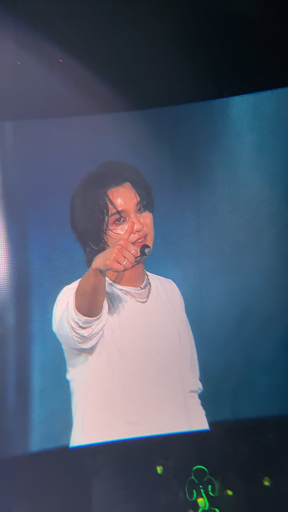

Reasons why I Love Him (and yes, this is personal)
Let’s start from the obvious one: his voice. Suara Haechan itu warm, clear, dan langsung nempel di kepala. Sekali dengar, langsung tau kalau itu suara dia. Suara dia lucu banget dan punya ciri khas tersendiri. Aku suka suara dia ketika dia nyanyi.
I really admire how hardworking Haechan is. Di balik image-nya yang playful dan ceria, dia serius banget sama apa yang dia kerjain. Selalu all out, dan selalu membuat aku kagum.
Personality-wise, Haechan itu sunshine person. Funny, bright, dan energinya gampang nular. Cara dia ketawa dan ngobrol tuh terasa real — not forced, not fake.
On stage, Haechan is powerful. Off stage, he’s warm and comforting. That contrast is what makes him special, dan bikin aku terus admire him. Oiya(dia ganteng banget kalau lagi konser).